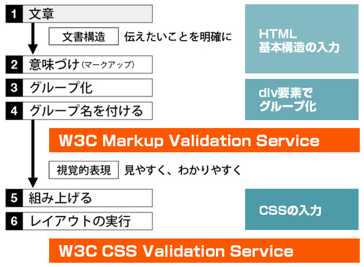
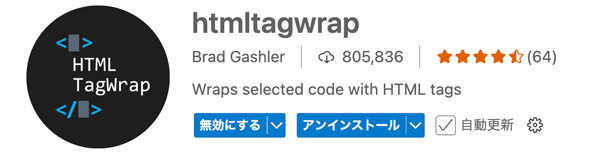
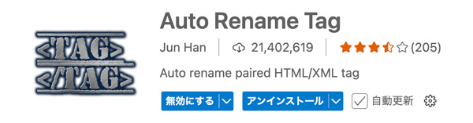

CSSによるページ構築の手順

- プロンプト例
CSSによるページ構築の手順を解説して
CSSによるページ構築の手順
① 全体構成を設計する（設計フェーズ）
まず、どんなページを作るかを整理します。
決めること
- レイアウト構成
- 【例】ヘッダー / ナビ / メイン / サイドバー / フッター
- 配色（ベースカラー、アクセントカラー）
- フォント
- レスポンシブ対応の有無（スマホ対応）
【例：ページ構成案】
<header> <nav> <main> <aside> <footer>
② HTMLで骨組みを作る（構造フェーズ）
CSSを当てる前に、HTMLで意味のある構造を作ることが重要です。
サンプルHTML構造
<!DOCTYPE html> <html lang="ja"> <head> <meta charset="UTF-8"> <title>サンプルページ</title> <link rel="stylesheet" href="style.css"> </head> <body> <header>ヘッダー</header> <nav>ナビゲーション</nav> <main> <section>メインコンテンツ</section> </main> <footer>フッター</footer> </body> </html>
ポイント
- semanticタグ（header, main, nav, footer）を使う
- CSSは外部ファイル化（保守性UP）
③ CSSリセット・初期設定（初期化フェーズ）
ブラウザごとの差異をなくします。
CSS初期化例
* { margin: 0; padding: 0; box-sizing: border-box; } body { font-family: sans-serif; line-height: 1.6; }
理由
- 余白のズレを防ぐ
- サイズ計算を楽にする
④ レイアウト構築（レイアウトフェーズ）
現代的な方法：Flexbox / Grid
【Flexbox例】body { display: flex; flex-direction: column; min-height: 100vh; } main { flex: 1; }
【Gridレイアウト例】
body { display: grid; grid-template-rows: auto auto 1fr auto; }
👉 おすすめ
- 単純 → Flexbox
- 複雑 → Grid
⑤ デザイン装飾（デザインフェーズ）
色・余白・文字サイズを調整します。
header { background: #333; color: white; padding: 20px; } nav { background: #555; color: white; padding: 10px; } main { padding: 20px; } footer { background: #222; color: white; text-align: center; padding: 15px; }
⑥ レスポンシブ対応（スマホ最適化）
@media (max-width: 768px) { nav { font-size: 14px; } header { text-align: center; } }
👉 重要ポイント
- px固定 → % や rem を意識
- モバイルファースト設計推奨
⑦ 実機テスト & デバッグ
チェック項目
- Chrome / Safari / Firefox 表示確認
- スマホ / タブレット対応
- 文字崩れ / レイアウト崩れ
👉 便利ツール
- Chrome DevTools（F12）
よくある失敗例
- ❌ divだらけ → 意味的HTMLを意識
- ❌ px固定 → レスポンシブ崩壊
- ❌ class命名が適当 → 保守不能
グループ化する
- レイアウト用のグループ化をして名前を付ける
- 基本的には「class名」（JavaScriptのトリガー用に「id名」）
class名の命名規則
- ブロックの役割の名前を付ける
<header class="header"> </header>
- 「パーツ名」を追記（ネストや子孫セレクタで記述するときに見づらくなるため「ブロック-パーツ」程度にします）
<nav class="gnav"> <ul class="link-btn"> <li><a href="#">リンク</a> </ul> </header>
レイアウト用のclass名
| 単語 | 意味 |
|---|---|
| container | 全体を囲むもの |
| wrapper | 囲むもの |
| content | 内容 |
| area | 領域 |
| outer | 外側 |
| inner | 内側 |
パーツ用のclass名
| 単語 | 意味 |
|---|---|
| title | タイトル |
| heading | 見出し |
| lead | リード文 |
| list | リスト |
| item | 項目 |
| copy | （キャッチ・ボディ）コピー |
| img | 写真・画像 |
| logo | ロゴ |
| news | 新着情報 |
| info | 情報 |
| announce | お知らせ |
| topics | 話題 |
| detail | 詳細 |
| summary | 要約 |
| text | 本文 |
| thumb | サムネイル |
| date | 日付 |
| time | 日時 |
| category | 分類・カテゴリー |
| link | ハイパーリンク |
| label | 項目名 |
| btn | ボタン |
| chart | グラフ |
| form | フォーム |
| part | パーツ |
| card | カード型 |
| table | 表 |
| history | 履歴・沿革 |
| contact | 問い合わせ |
形容用のclass名
| 単語 | 意味 |
|---|---|
| main | 主要な |
| sub | 副次的な |
| global | 全体の |
| local | 局所的な |
| primary | 最優先の |
| secondary | 副次的な |
| bg | 背景 |
より高度な命名規則
入力（VS Code）
- コンテンツがある場合（テキストと画像がある場合）
htmltagwrap（拡張機能）
- 「Alt + W」で、選択したテキストを「開始タグ」と「終了タグ」で囲むことができます（初期値は「p」タグ）

Auto Rename Tag（拡張機能）
- 「htmltagwrap」で「p」タグに入力されたタグを入力しなおします
